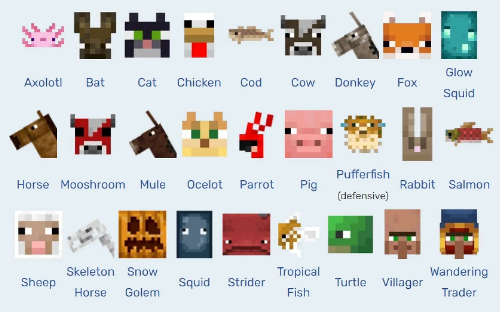
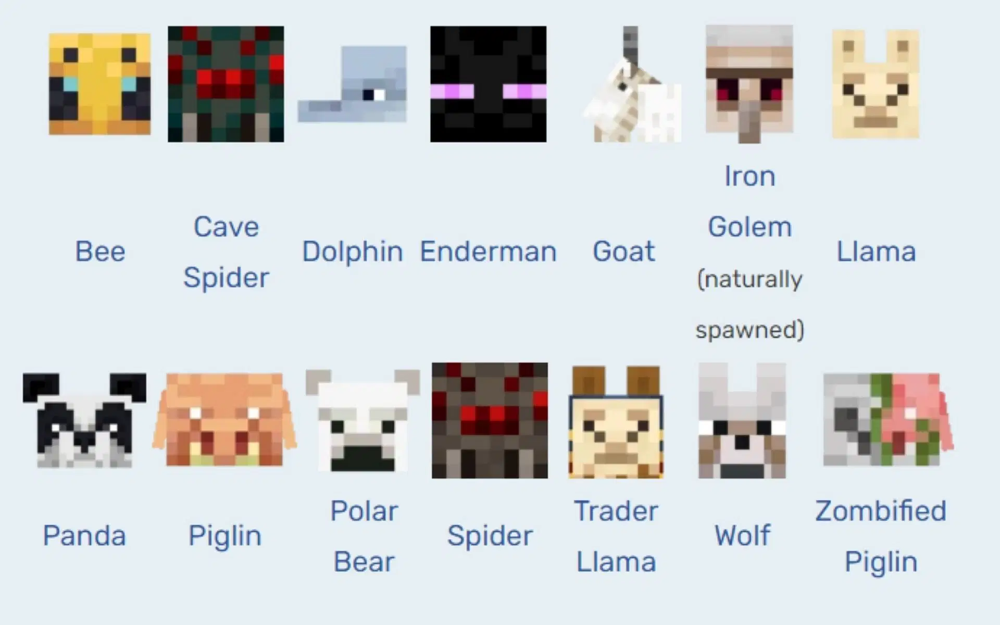
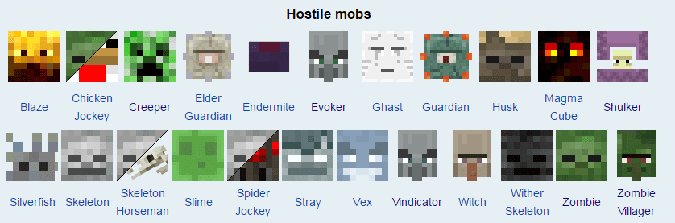

Classificazione Mob
I mob sono creature viventi nel gioco, con comportamenti vari, da amichevoli a molto pericolosi.
Mob Pacifici
- Mucche: Forniscono carne e latte.
- Pecore: Lana colorata, carne.
- Maiali: Carne, possono essere cavalcati con la sella.
- Polli: Uova, carne, piume.
- Villager: NPC con cui fare scambi.


Mob Neutrali
- Enderman: Attaccano solo se provocati o guardati.
- Lupi: Possono essere addomesticati e usati come compagni.
- Iron Golem: Protettori dei villaggi.
Mob Ostili
- Zombi: Attaccano i giocatori e i villager.
- Scheletri: Usano archi per attaccare da distanza.
- Creeper: Esplodono vicino al giocatore causando danni.
- Ragni: Attivi di notte, possono arrampicarsi.
- Streghe: Usano pozioni per attaccare e curarsi.
- Wither: Boss evocabile estremamente potente.
- Ender Dragon: Boss finale, sfida dell'End.
